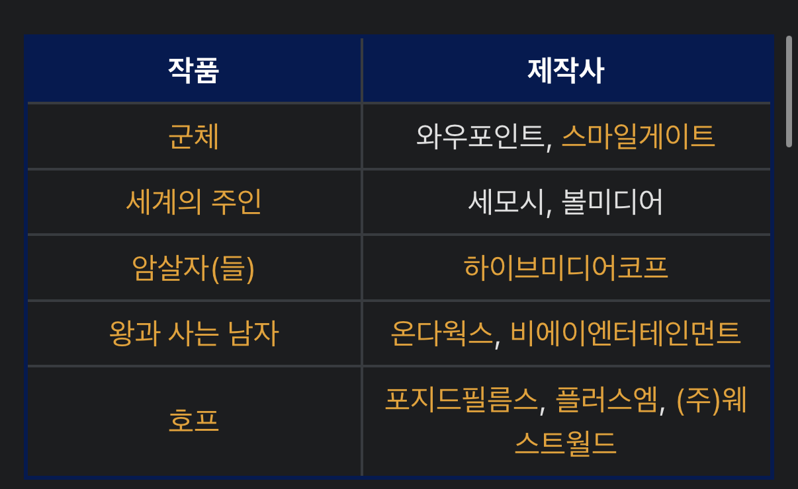

최우수 작품, 감독상 라인업

최우수 작품상 수상작
감독상 수상작
세계의 주인 제외하고 라인업이 진짜 별거 없어서 세계의 주인과 그나마 호프가 정배긴 했는데 흠..
최우수 작품, 감독상 라인업

최우수 작품상 수상작
감독상 수상작
세계의 주인 제외하고 라인업이 진짜 별거 없어서 세계의 주인과 그나마 호프가 정배긴 했는데 흠..
스크린쿼터 얼른 찢어야
솔직히 진짜로 영화 좀 좋아하고 많이 보는 편인데
이 영화는 올해 영화 치이카와 선에서 컷인 거 같음
...추격신이 진짜 치이카와선에서 컷임;
호프 봤는데 그냥 오프닝에서 끝난 느낌이었음. 비교하자면 스카이라인 1편 봤을때 느낌
딱 그정도 느낌같음
비급느낌나는데 생각보다 볼만한
난 스카이라이프 극장서 본것 같은데 ㅋㅋ
천만 넘어서 왕과 사는 남자가 받을 줄 알았는데 아니네ㅋㅋㅋ
개인적인 생각으로는 오히려 왕사남은 천만 받은거때문에 그나마 어거지로 후보 올린거같은데
작품상 라인업에 낄 정도인가 하면 그정도는 또 아닌거같아서
왕사남은 걍 해운대급이라봐서
줘도 욕먹엇음;
한국게임대상 - 호연!
세계의 주인 최우수작품상 줘도 될거 같았는데
유튜브 에디션으로 보고 경악을 금치 못했음 ㅋㅋㅋㅋ
호프=디워
세계의 주인이 개쩐다고 리뷰 유튜저들이 입을모아 극찬을 하던데 그렇게 쩌나?
스토리대충보니 좀 불편한 내용이고 피하는 장르라 안봤는데 봐야하나....
꼭 ㄱㄱ
영화 자체가 재밌는디
라인업봐라 ㅋㅋ
호프 ㅋㅋㅋㅋㅋ 시발 ㅋㅋㅋㅋㅋㅋㅋㅋㅋㅋㅋ
호프는 좀...
어짜피 저자리는 세주가 없어진 이상 뭐가 올라가도 욕먹음
군체, 왕사남 —> 관객수도르로 뭐 이딴걸 최우수 작품상을 수상하고 있냐
암살자들 —-> 정떡 좆됨
호프 —-> 뭔 칸 경쟁도르로 수상을 쳐 받냐 호불호 쳐받는걸 최우수 수상하냐
뭐가 올라가도 욕먹음 그만큼 세주 제외하고 라인업이 별로임 가능한 사랑 있었으면 이견 없었는데 그건 애초에 보이콧해버려서
최우수작품상 ㅇㅈㄹㅋㅋㅋ
라인업이 처참해서 받을 가능성이 있긴했네ㅋㅋㅋㅋ
뭐야 저딴게 노미가 됐네
주어는 없음
세계의 주인 둘다 줘도 되는데
영화를 취미로 보는 수준이라 내가 영화에대해 존나 문외한 건가 호프 상받을 정도는 아닌데
애초에 세주제외 상 받을 수 있는 라인업이 아님
그냥 칸 경쟁도르로 받은거같음..
초중반 생각해보면 호프가 받는게 맞긴함
세계의 주인이 아니라???? 내가 호프도 좋아하긴 하지만 이건 좀....
호프 ㅋㅋㅋㅋㅋㅋㅋㅋ 진짜 씨발원툴 영화가 상받고 참 권위 좆되네
호프 즁나 재밌게 봤는데
댓글에 나같은 사람 없어서 너무 외로워
호프 재밌었어
문제는 라인업에 세주가 떡하니 있는데 작품상까지 받아서 문제인거지
세주 없었으면 애초에 저 라인업중에선 호프가 정배임
호프같은 영화를 떠 만들어낼 수 있을까...
세계의 주인 나쁘지 않았지
ㅋㅋㅋㅋㅋㅋㅋㅋㅋㅋㅋㅋㅋㅋㅋㅋㅋㅋㅋㅋㅋㅋㅋㅋㅋㅋ
와 근데 라인업이 진짜 끔찍하긴 하네
호프는 2부 3부 나오나 그 전개를 대체 어떻게 마무리지을까 궁금함.. 그 지역에 미사일 떨어뜨리고 없던일 식의 마무리는 아니겠지 설마
후속작 못나옴
플러스엠이란 국내영화계 큰손이 호프에 풀베팅했다가 지금 영화에서 손뗀다 소리가 나오고 있는데
후속작각이 섰으면 감독이 호프 찍은 거 후회 안 한다 이런 인터뷰를 안 했겠지
호프 왜 그렇게 까이는지 당췌 이해가 안감
호프에 기대한게 없었던거 cg 구렸던거 알겠는데
그럼에도 그냥 재밌었음 나는
또 싸우네 ㅋㅋㅋ
호프 최우수 좀 벙찌더라
글고 주조연상도 싹다 가능한 사랑 몰아준 게.....흠
줄 영화가 그렇게 없나 ㅋㅋㅋ 그 영화같지도 않은 각본을
이건 작품상도 세계의주인이 받아야되는거같은데
올해 한국영화중에 최고였음 걍
현재 영화계 주류가 개븅신들만 모인거 이제 알겟제?
난 호프 재밌었다
굿뉴스는 넷플이라 해당 안되는건가
굿뉴스가 저기 없는게 이해가 더 안되네
굿뉴스 편집상, 미술상 받음
군체도 작품상 운운하는 마당에 곁다리에만 끼워넣고 먹고 떨어져라는게 그게 더 이해가 안되네 ㅋㅋㅋㅋㅋ
10개 - <호프>
8개 - <가능한 사랑>
7개 - <왕과 사는 남자>
6개 - <군체>
5개 - <세계의 주인>, <암살자(들)>
4개 - <경주기행>, <굿뉴스>, <만약에 우리>, <살목지>, <와일드씽>, <파반느>
3개 - <휴민트>
2개 - <여름의 카메라>, <충충충>
여기서 가능한 사랑 보이콧하고 상위 5개
호프는 일단 전무후무한 영화긴 했음. B급 정서+나홍진 특유의 기존의 개연성과 서사성 무시하는 돌발성까지 합쳐졌는데 이걸 우리나라치곤 거대자금으로 만들어진 거라.. 난 영화가 너무 길어서 별로인 거 말고 좋아하는 사람이나 싫어하는 사람 양쪽 모두 이해가 됨. 세계의 주인은 윤가은이 인물 구도와 사건이 서서히 드러나게 만드는 디테일들이 일본으로 치면 거의 하마구치 류스케급으로 폼이 올라왔을 정도로 인정해줄만한 연출가 같음. 그리고 이 영화에서 신인데뷔한 주인공 배우가 연기가 너무 훌륭한 것도 영화 퀄리티 많이 올린듯. 나머지는 뭐가 있었나 노미된 것들 체크해보니 우리나라 영화가 뭐가 많이 없긴 했었네..
역사왜곡 영화가 라인업에 꾸역꾸역 들어간거 보면 영화계 상황이 어떤지 딱 알겠네